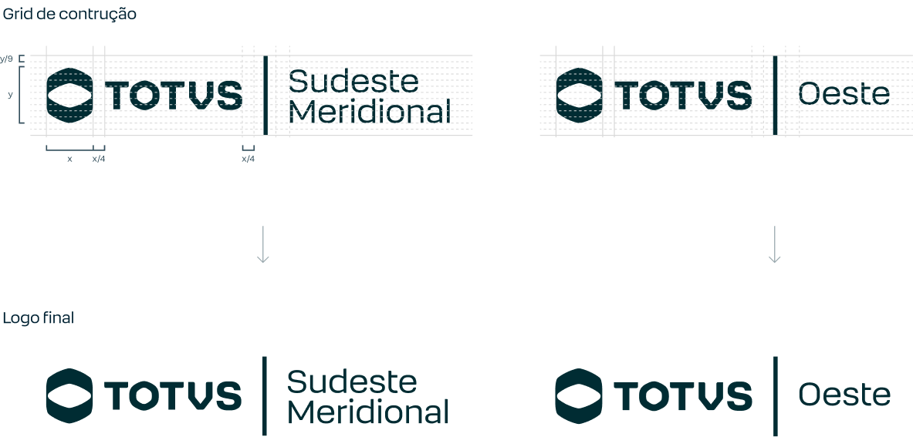

Em sinalização de fachadas, letreiros e recepções das unidades TOTVS, pode-se usar uma versão especial da marca, com o nome da franquia aplicado ao lado do logo, seguindo os parâmetros de construção ao lado.

Importante: não utilize este logo em nenhuma outra ocasião além das descritas. Sempre construa novos logos de unidade a partir dos arquivos oficiais.